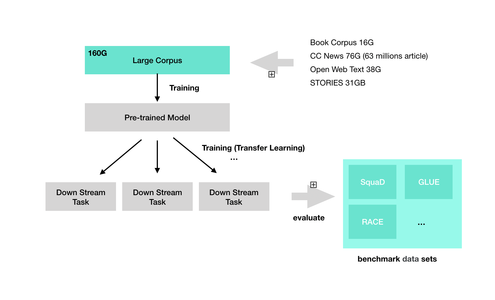

RoBERTa: A Robustly Optimized BERT Pretraining Approach
언어 모델 프리트레이닝은 상당한 성능 향상을 가져 왔지만, 다른 접근방식 간의 비교는 어렵다. 훈련은 계산 비용이 높은 이유도 있지만, 접근 마다 데이터을 저마다 이용하기 때문이다. 이 논문은 BERT 프리트레이닝(Devlin et al., 2019)의 복제 연구이다. 이 논문은 하이퍼 파라미터 선택이 실험 결과에 많은 영향을 줄 수 있음을 가정하고 있다. 레이블 데이터를 이용해 end-task에 대한 파인 튜닝(finetuned)을 적용한 모델을 만든다다. BERT가 상당히 불충분한 훈련을 받았고, BERT 이후의 모델의 성능은 BERT 모델과 유사하거나, 초과할 수 있다는 점을 지적한다. RoBERTa는 BERT에 비해 학습 전략을 보다 잘 설계하였고 더 많은 PreTraining을 수행하는데 집중했다.
-
배치 사이즈시 사용하는 데이터가 16G 정도의 데이터를 사용함(위키피디아)
-
dynamic masking
-
NSP 로스를 고려하지 않고 전체 문장에 대해 large 미니 배치
-
larger byte-level BPE(Byte Pair Encoding)
이 논문에서의 모델은 GLUE, RACE 및 SQuAD에 대한 State-of-the-art 결과를 보였다.
